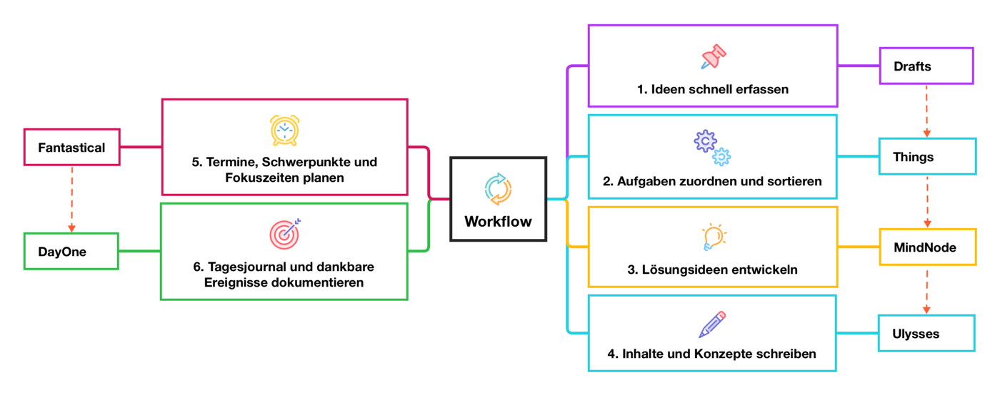

Windows oder Mac? Bücher oder Podcasts? Favorisierte Apps? Bier oder Wein? Kurz- oder Langstrecke?
Hier erfahren Sie mehr über meine aktuellen persönlichen Favoriten ...
Werkzeuge
Im privaten Umfeld bewege ich mich im Apple-Ökosystem. Apple-Watch, iPhone, iPad, Macbook. Ich versuche mein Setup so mobil und ortsunabhängig wie möglich zu gestalten.
Apps
Hier ist eine Liste der Wichtigsten von mir verwendeten Apps. Jeder hat seine Favoriten und sicherlich individuelle Workflows, aber dies sind Dinge, die mich produktiver machen.
Ich bin ein Anhänger der GTD-Methode, die ich auf meine individuellen Bedarfe anpasse.
Schnelle Ersterfassung:
Alle neue Informationen, Ideen und unstrukturierte Hinweise gehen direkt in Drafts. Als Sprachnotiz von der Apple Watch oder als Text übers iPhone, iPad oder Macbook. Aus dem Kopf direkt schnell erfassen und später prüfen, wie und ob noch weitere Schritte erforderlich sind.
Zuordnung zu konkreten Aufgaben:
Alle Aufgaben verwalte ich nach der GTD-Methode in Things mit automatisierten Verweisen zu den Drafts Textnotizen. In meiner Tagesabschluss-Routine prüfe ich den Eingangskorb von Drafts und übertrage automatisch die Informationen, dort wo ich eine spätere Aufgabe als sinnvoll bewerte.
Entwickeln von Lösungsideen:
Für alle komplexere Aufgaben, längere Artikel- oder Präsentationsvorbereitungen verwende ich zu Beginn Mindmaps in Mindnode. Hier kann ich einfach Dinge neu sortieren, in anderen Kontexten setzen und eine geeignete Struktur für das Ausformulieren schaffen.
Planen:
Die Zeitplanung, das Blocken von Fokus-Zeiten sowie die Koordinierung und Einladungen zu privaten Video- und Telefonkonferenzen erfolgt in Fantastical. Verschiedene Kalender mit unterschiedlichen Farben werden hier verwaltet und in unterschiedlichen Gruppen eingeteilt. Die Terminplanung mit Anderen erfolgt einfach über die individuelle Veröffentlichung freier Terminblöcke.
Reflektieren:
Das tägliche kurze Tagesjournal, meine persönlichen Ziele und die Wochen- und Monatsreviews erfolgen in DayOne. Was hat gut funktioniert, was weniger gut? Welche Routinen kann ich verbessern oder einfacher gestalten? Was waren meine Museumstage in diesem Monat?

Laufen
Damit ich den guten Wein wieder ablaufe, versuche ich regelmäßig morgens zu laufen und ein kleines Trainingsprogranm für einen Halbmarathon in den Tagesalltag einzubauen.
Die letzten Halbmarathons waren in Köln und Palma. Meine beste Zeit liegt aktuell bei 1:53 Stunden. Aber mal sehen was noch kommt ;-)